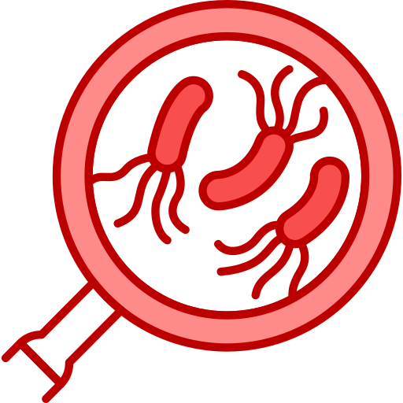

Welcome to MONOOPY!
This isn't just any game of Monopoly. In this version, you’ll navigate the familiar landscape of buying properties, building houses, and making deals, but with a twist. You’ll choose two powerful traits that can completely change how you play – from the way you move around the board to how you earn money, or even how your opponents’ turns play out. Custom Chance Cards can affect anyone, and secret Development Cards can give you the upper hand or sabotage your rivals. The race to 15 Victory Points adds a whole new layer of strategy, with points earned by building homes, completing achievements, and dominating the board. Are you ready to outsmart and outplay your opponents? Let’s see who can rise to the top!
Game Pieces
- Standard Pieces:
- 1x Base Monopoly Set
- 2x Worm Holes
-  6x Parasite
- 1x God Father Hitman
- 1x Robber
 1x Guardian Angel
1x Guardian Angel- 1x Road Works
- 6x Master Negotiator Tokens
- 18x Viv Fart Tokens
- 4x Nates House
- 40x Dev Cards
- 40x Goodluck Cards
Objective
The goal of Monopoly is to obtain 15 victory points (VPs). Victory points can be obtained through various methods:
- Properties: Each property is worth 1 VP.
- Housing: Building 1 house in each property within a monopoly gives 1 VP, with up to 5 VPs per monopoly after building a hotel.
- Goodluck Cards: Certain cards give VPs.
- Development Cards: Some Development cards provide VPs.
- Achievements: Each achievement is worth 1 VP, with "Landlord" worth 2 VPs.
Set Up
- 1. Set up the board as normal for Monopoly, placing "Good Luck" cards on the "Chance" card tile, and "Development" Cards on the "Community Chest" card tile.
- 2. Designate an area for a discard pile for the development cards.
- 3. Sort the properties into their respective color sets to make it easier later on to hand out properties.
- 4. Designate one player to be the banker and one to handle properties.
- 5. Give each player a total of $1500 in the following denominations: 2x $500, 4x $100, etc.
- 6. Once players have their money, determine the turn order by having each player roll the dice. The player with the highest roll goes first, and play proceeds clockwise.
- 7. After determining the order, begin the banning phase, where each player bans 1 trait.
- 8. After the banning phase, players choose their traits, starting with the first player, then reverse order for the second trait.
- 9. Once traits are decided, distribute any relevant pieces/money/cards to the trait holders.
Types of Income
Trait Income:
Monetary gain due to a trait (e.g., Earning $50 for rolling a double)Card Income:
Monetary gain from Goodluck or Development cardsBoard Income:
Rent from properties, tax refunds, etc.
Types of Movement
Trait-Based Movement:
No negative effects are applied when moving as a result of a trait.Dice-Based Movement:
Standard rules apply to dice-based movement and board effects (like going to jail).Card-Based Movement:
All effects apply unless stated otherwise on the card.
Turn Structure
- Any positive or negative effects wear off at the start of your turn.
- Trait income is received or given.
- Development cards can be played from this point.
- Roll the dice, collect "Go" money if applicable.
- You may build houses after rolling.